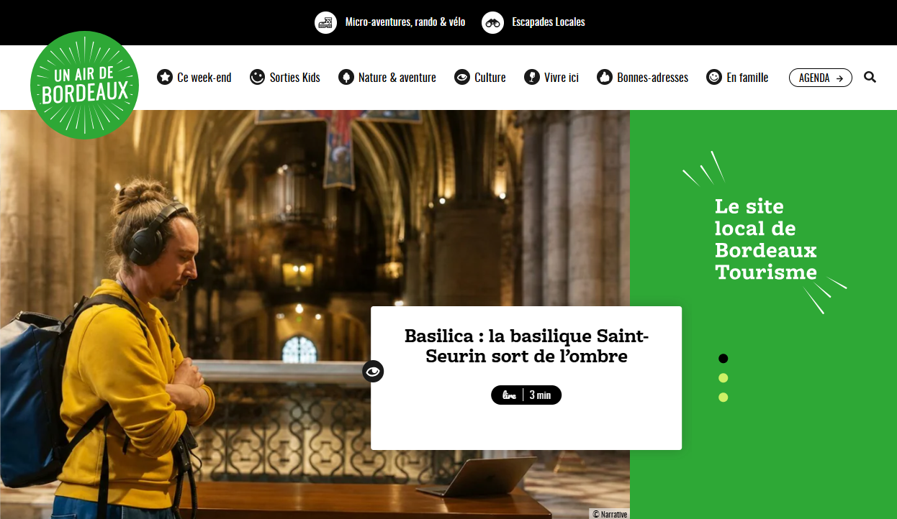
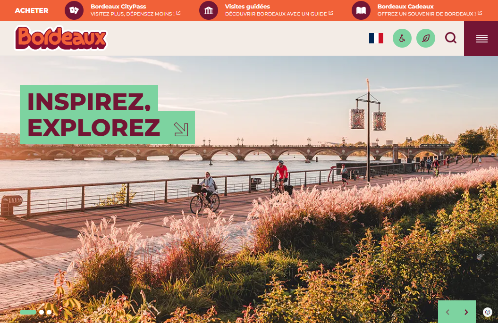
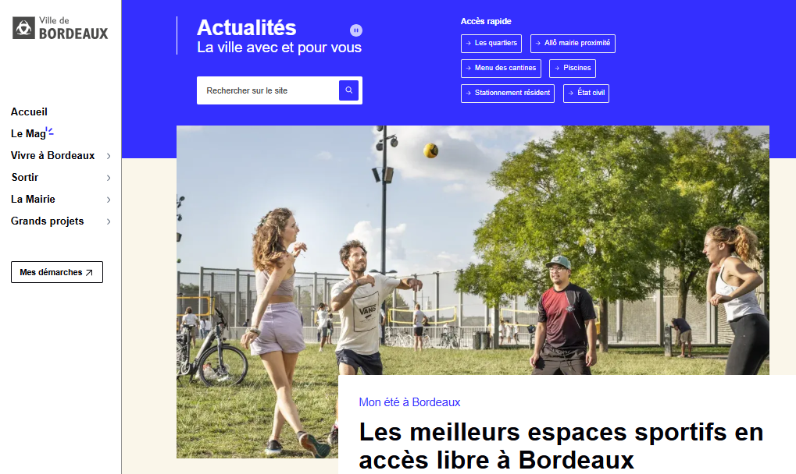
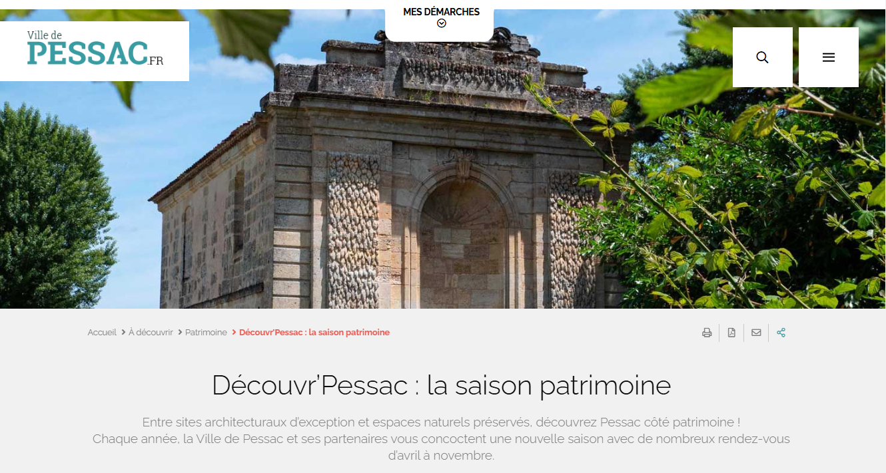
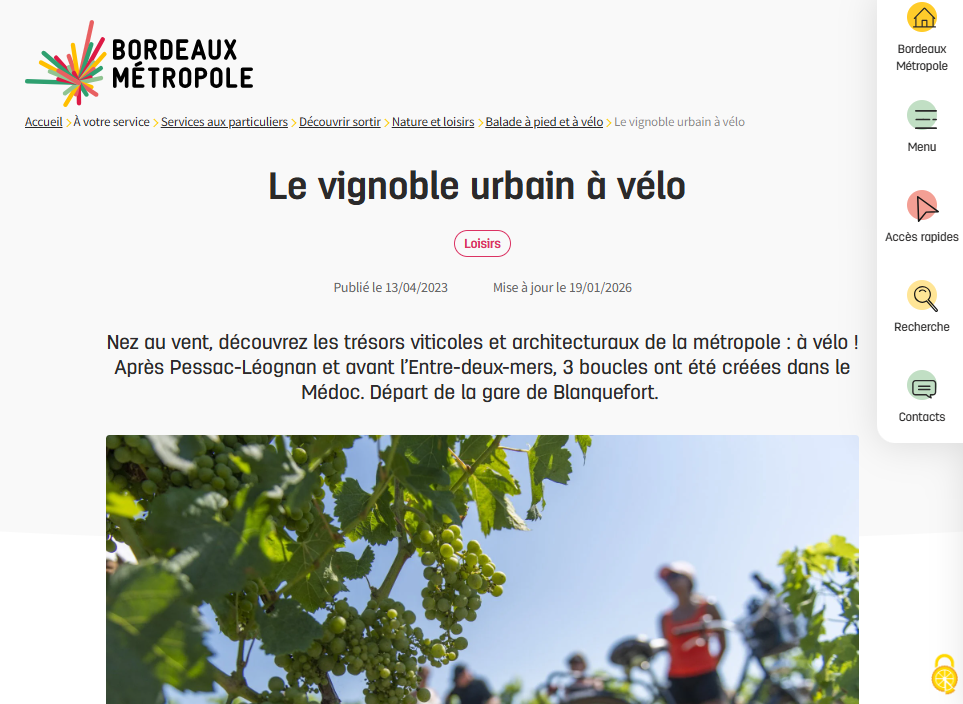

Sorties et découvertes locales
Un Air de Bordeaux
Des idées de sorties, des événements, des bonnes adresses et des balades pour profiter de Bordeaux et de toute la métropole.
Découvrir le siteLes sites que nous te conseillons pour sortir, visiter, marcher et profiter de Bordeaux et de sa métropole.

Des idées de sorties, des événements, des bonnes adresses et des balades pour profiter de Bordeaux et de toute la métropole.
Découvrir le site
Des visites guidées, des grands événements et de nombreuses idées pour explorer la ville autrement.
Visiter le site
L’actualité de la Ville, son agenda, ses services et toutes les informations utiles pour ton quotidien à Bordeaux.
Voir le site
Une saison culturelle gratuite d'avril à novembre, proche du campus Talence/Pessac. Entre sites architecturaux d’exception et espaces naturels préservés, découvrez les rendez-vous patrimoine de Pessac !
Découvrir
Des itinéraires pour prendre l’air, marcher, courir ou pédaler dans les 28 communes de Bordeaux Métropole.
Explorer les balades